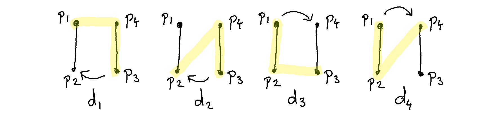

In Amsterdam there’s so many Albert Heijn stores there’s a risk of tripping over them. This made me wonder: where do you need to live in Amsterdam if you want to live as far away from an Albert Heijn store as possible? To answer this question, I needed to write some geometric algorithms.
The Problem
Suppose that I have a list of all the latitude/longitude coordinates of every Albert Heijn store. Then I still need to figure out which ones are located in Amsterdam. I’ll also need a way to randomly sample random house adresses that are inside of a polygon and not outside of it. In essense, I need an algorithm that can detect if a dot is in the blue area below.
It is easy for a human to look at the drawing and to figure out that two points are inside of the polygon and one lies outside of it. For an algorithm this is less obvious because all I have are the ordered coordinates of the polygon. There’s an algorithm to solve this though and it relies on a few insights from geometry.
- you can come up with a line (a “ray”) that goes through the shop of interest
- this ray must at some point enter and leave the polygon if it is inside of it
- a ray will enter or leave a polygon if the ray intersects with a line segment from the polygon
- if the polygon is not convex then this property still holds but you might enter/leave the polygon multiple times
This insight is helpful but we’ve now gotten a new problem: how can we find out if two line segments intersect given a set of coordinates? Turns out that there’s a geometric trick for this as well.
Suppose that there are four points that span two lines \(L_1 = (p_1, p_2)\) and \(L_2 = (p_3, p_4)\). I could take three of the points, say \(p_i, p_j, p_k\), and check the direction in which the angle is turning.
I could do this for a bunch of combinations of the points. Say, these;

Note that we can demonstrate a non-intersect too.

Notice how the directions \(d_1\) vs. \(d_2\) are opposites just like \(d_3\) vs. \(d_4\) when the lines intersect. Also notice how they aren’t when they don’t.
Code
When I code in my spare time I try to optimise for joy. It’s not that numpy isn’t joyful but in this particular case a custom class makes a whole lot of sense.
class Point:
def __init__(self, lat, lng):
self.lat = lat
self.lng = lng
def __add__(self, other):
return Point(self.lat + other.lat, self.lng + other.lng)
def __sub__(self, other):
return Point(self.lat - other.lat, self.lng - other.lng)
def __mul__(self, other):
"""crossproduct!"""
return self.lat * other.lng - self.lng * other.lat
def __repr__(self):
return f"<Point({self.lat}, {self.lng} at 0x{id(self)}>"This custom class makes it easier for the python code to look like actual mathematics. Moreover, it is way more fun to program this way.
def direction(p0, p1, p2):
return (p1 - p0) * (p2 - p0) > 0
def intersect(p1, p2, p3, p4):
d1 = direction(p3, p4, p1)
d2 = direction(p3, p4, p2)
d3 = direction(p1, p2, p3)
d4 = direction(p1, p2, p4)
if (d1 != d2) and (d3 != d4):
return True
return FalseAlbert Heijn in Amsterdam
With this algorithm in place I was able to select all the shops that are in my definition of Amsterdam. As you can see, the centre of Amsterdam is quite blue.
I wanted to know where you needed to live in Amsterdam if you wanted to be as far away from one of these shops as possible. The results of my genetic algorithm are shown below.
The result is really uninspiring. If you want to live far away your best bet is to live either: in a public park, in an industry park or in the river ’ij.